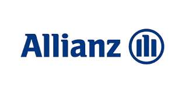
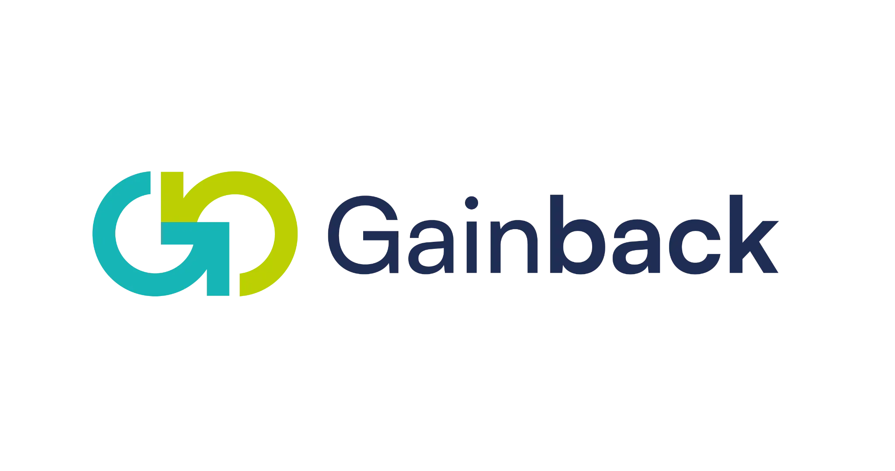

Nuestra misión es asesorar y ayudar a personas, familias y empresarios a proteger su patrimonio, construir ahorro, inversión y seguridad financiera mediante soluciones personalizadas de Allianz.
Quiero mi Diagnóstico Sin Costo
Protección económica para tu familia ante fallecimiento,
invalidez o eventos inesperados.
• OptiMaxx Protección
Construcción de patrimonio con estrategias de corto, mediano y largo plazo.
• OptiMaxx Plus
• OptiMaxx Elite
Planeación financiera para garantizar recursos educativos futuros para tus hijos o nietos.
• OptiMaxx Educación
Protección económica ante eventos que pueden afectar tu salud y cuidan tu patrimonio.
• Allianz GMM
Protección integral para tu vehículo y responsabilidad civil.
• Allianz Auto
Protección para vivienda, contenidos y responsabilidad familiar.
• Allianz Residencial
Tu diagnóstico no tiene costo y te permitirá conocer oportunidades de protección, ahorro e inversión que hoy no estás aprovechando.
Allianz es una de las compañías financieras y aseguradoras más importantes del mundo, con presencia internacional y más de 130 años de experiencia en protección, ahorro e inversión. Actualmente brinda soluciones a millones de personas, familias y empresas, ofreciendo productos de vida, inversión, gastos médicos, auto, hogar y protección patrimonial. Su fortaleza financiera, experiencia global y compromiso con sus clientes la convierten en una de las marcas más reconocidas del sector asegurador.
Gainback es una promotoria especializada en el desarrollo de asesores financieros y patrimoniales de alto desempeño. Su enfoque está basado en capacitación continua, acompañamiento comercial, herramientas tecnológicas y metodologías de consultoría financiera para brindar un servicio profesional y personalizado a cada cliente. A través de Gainback, los clientes reciben atención cercana, seguimiento constante y soluciones alineadas a sus objetivos financieros de corto, mediano y largo plazo.
La combinación de la solidez internacional de Allianz y el acompañamiento profesional de Gainback permite ofrecer estrategias de protección, ahorro e inversión diseñadas para las necesidades específicas de cada persona, familia o empresa.
💬 WhatsApp:2943242462
Correo: segurosyahorroassa@gmail.com
Servicio Nacional: México
Quiero mi Diagnóstico